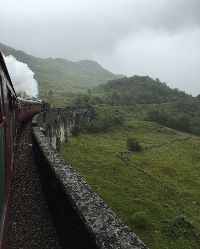

This is a photo of a sloping street in Edinburgh. I loved the colours and textures of buildings; they had a very medieval feel to it!
This is a photo of the Hogwarts Express train passing over the Glenfinnan Viaduct! This scene was shot and used numerous times in the Harry Potter movies. You might remember this viaduct from the second movie where Harry and Ron were in a flying car trying to follow the Hogwarts express, while it went over this bridge. I'm a big Harry Potter fan so seeing this was very exciting for me! This viaduct was a 3-4 hour drive from Edinburgh